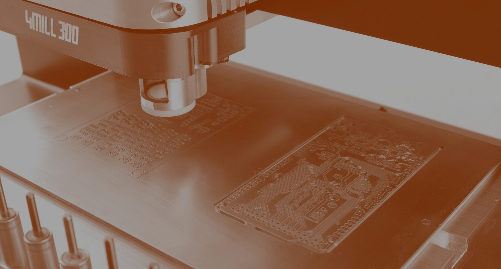
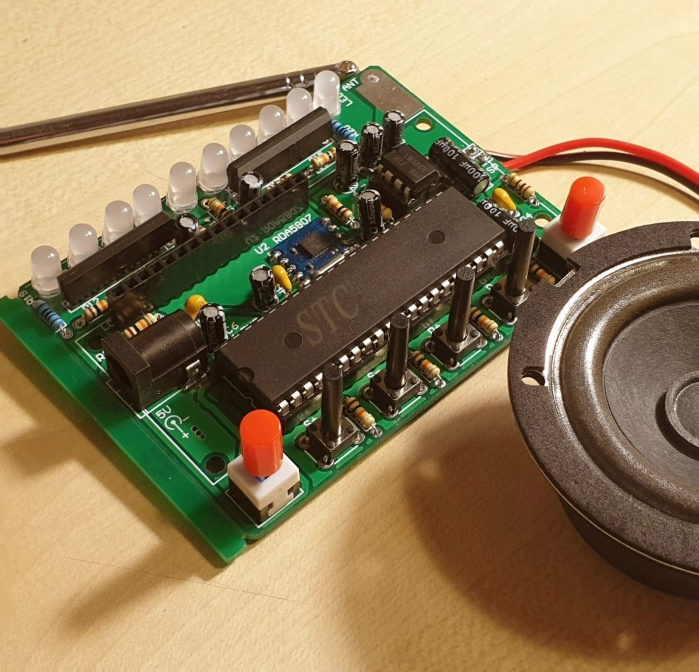

/electronics_production
(22_february_2022)
FabAcademy's topic this week was PCB building and electronic production. During the session, we
were told about different kinds of PCBs and how to build them with the circuit wanted. There are
many ways to build a PCB considering materials, layers and connections. Depending on the resources
and the precision sought one method will be better than another.
The most important part of the class however was the fabrication explanation, where FabLab team
told us how to create the connections of a PCB using different machines and technologies. Obviously,
these are methods used in retail production and not mass production since the PCBs need to be made
one by one. Some of the methods are etching, milling, fiber laser and vinyl cut. Every technique
has its pros and cons but I'd say that the best one would be milling since there are fewer chances
of messing it up.

After that, they also made an explanation on how to solder the components to the already defined
PCB. We were told which are the essential tools we should have to solder, which are the most
commonly used materials and finally gave us some recommendations on how to use the solder, safety
tips and other tricks.
The second part of the class consisted of putting into practice the knowledge we got from the
theory part, so we divided into two groups and we learnt how to create the PCBs with the milling
machine, using a website called modsproject.org. We also had the opportunity to practice our
soldering skills by soldering some small components to a simple PCB, which is the task of the week.
Since I didn't have the PCB we used during the practical class, I decided to put my soldering
skills into practice by welding a Radio AM/FM kit I had at home. I soldered more than 30 components
with around 100 soldering points, but for some reason the PCB is not working as expected. I'll have
to check the current with a multimeter to make sure every component is connected to the circuit.
This is how the Radio looks:
